EnvACE：通过世界复演内化环境动力学的智能体强化学习
EnvACE 的主题是长程工具调用智能体如何在不依赖训练期真实环境执行的情况下学习行动后果。论文由上海交通大学的 Zishan Xu 任第一作者，合作机构包括浙江大学、新加坡国立大学、中山大学、中南大学、香港中文大学与腾讯，2026 年 8 月 6 日公开于 arXiv:2608.06197。作者把原本由真实工具或外部模拟器返回的 observation 改成同一策略内部的 REHEARSAL 角色生成，并用任务成功奖励联合训练 ACT 与 REHEARSAL；官方代码仓库已核验，仓库给出训练入口和依赖配置，模型权重截至论文发布后的仓库公告仍处于即将发布状态。
长程工具使用训练通常依赖构建和验证成本很高的可执行环境，或依赖难以通过真实环境落地校准的外部模拟器；两条路线都让“动作会引起什么响应”的建模停留在行动策略之外，限制了可扩展性。
1. 背景和问题
工具型智能体的决策并不是一次函数选择。给定用户指令后，策略产生动作，工具或服务返回观察，新的观察再进入下一轮历史；只要任务涉及账户状态、库存、订单、航班或金融工具，后续动作就依赖此前每一步造成的状态变化。因此，训练数据不能只有“问题—答案”，还要能让多轮轨迹真实地展开。传统做法把这一责任交给可执行环境：策略发出调用，真实或合成的 API、数据库和状态机给出响应。它的优点是反馈有明确执行语义，缺点是每新增一种领域或工具就要建设状态、约束、验证器与回滚机制，环境越复杂，合成任务是否真的可执行也越难验证。
另一条路线用独立 LLM 模拟器生成工具输出与用户反馈，省去部分后端工程，但模拟器可能给出不一致或不可能的状态。更关键的是，模拟器仍要依靠真实环境数据来校准：若没有 grounding，就无法知道生成的订单状态、参数约束或写操作后果是否成立。两类训练范式虽然实现不同，却共享同一个边界——行动策略消费外部供应的 observation，自身并不负责生成并学习这套响应关系。这会导致策略很擅长在已有反馈上继续推理，却未必能在动作提交前预想“这个参数会报错”“这次写入违反业务规则”。
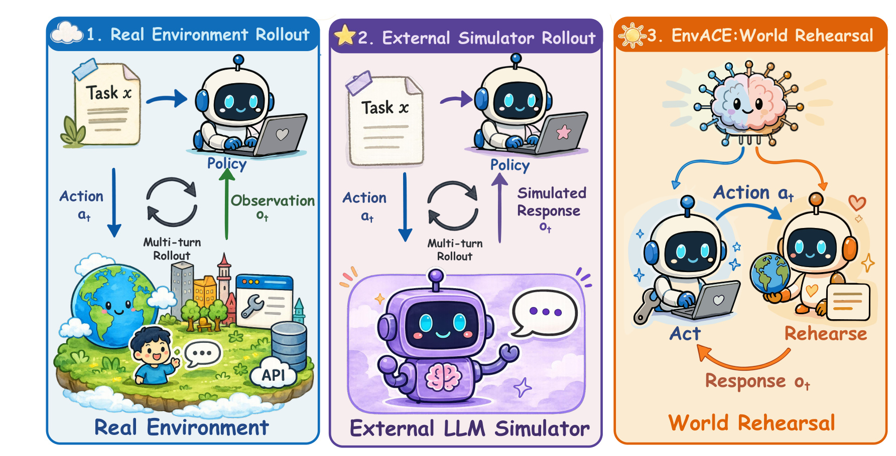
Figure 1 把问题压缩成三栏：真实环境 rollout 让真实系统返回 $o_t$，外部模拟器 rollout 让另一个 LLM 给出 simulated response，EnvACE 则让同一 policy 在 ACT 与 REHEARSE 两个角色间切换。前两栏中，环境知识存在于策略参数之外；第三栏尝试把动作—响应关系吸收进策略。但这张图表达的是响应来源的迁移，不是响应真实性的证明。真实环境的 $o_t$ 来自执行，复演的 $\hat{o}_t$ 来自模型采样，两者在语义上不能直接画等号。EnvACE 解决的是训练交互扩展成本，以及行动策略缺乏内生世界模型的问题；它并没有自动解决模拟误差、隐藏状态或副作用验证。
论文的关键判断是：一个有效 agent 不应只会选择动作，还应在参数中保存“动作通常诱发什么环境响应”的知识。为此，EnvACE 不把环境预测当成独立辅助 loss，也不再训练一个单独 simulator，而是让策略实际扮演环境角色，把复演结果写回历史并据此继续下一步。完整轨迹只在内部展开，终点由可验证结果评估器或 checklist 式 LLM judge 给出任务级奖励。这样做把环境建模和行动决策纳入同一优化过程，也带来新的信用分配问题：一条轨迹失败，可能是 ACT 选错动作，也可能是 REHEARSAL 编错响应，而任务级标量奖励不会直接标出是哪一步出错。
这项工作与 Agent/RL 的直接关系很清楚：它重新定义训练 rollout 的“环境侧”。对推荐系统也有潜在迁移价值，例如让策略在真正触发重排、触达、优惠券或广告预算写操作前，先复演候选动作对用户状态和业务约束的影响。不过推荐与广告系统的反馈高度随机、延迟且受未观测因素影响；若把确定性工具环境中的收益直接外推到用户行为模拟，就会高估内部世界模型的可靠性。因此，本文更适合作为一种训练与测试时计算分配机制来理解，而不是“模型已经替代真实环境”的结论。
从学习问题看，EnvACE 还引入一种容易被忽略的“共同适应”风险：ACT 与 REHEARSAL 都由同一参数生成，如果复演角色虚构了一个更容易完成的世界，行动角色可能在这个内部世界里得到连贯轨迹，却在真实系统中失败。轨迹级 reward 能否阻止这种退化，取决于终局 evaluator 是否掌握真实约束。可验证任务可以用确定规则检查结果，复杂服务任务则使用 checklist 式 LLM judge；后者未必能发现隐藏状态、错误中间 observation 或不合规副作用。因此，性能提升证明的是联合训练在现有评测上有效，不等于模型已经识别出真实的因果转移。
另一方面，外部环境也并非天然无误：合成状态机可能不覆盖异常分支，真实 API 又昂贵、限流或有副作用。EnvACE 的合理定位不是在“真实环境”和“模型想象”之间二选一，而是把大规模探索放到内部，把少量真实交互留给校准与最终提交。若能周期性采样动作，将 $\hat{o}_t$ 与沙箱执行的 $o_t$ 配对，并对高风险写操作保留硬 validator，就能形成“复演扩量—真实校准—安全门控”的闭环。论文当前主要完成了第一部分，后两部分仍是把世界复演带入生产的必要条件，也决定了后续实验需要单独审计哪些证据。
2. 方法
EnvACE 的原文方法按三个模块展开：先用 ACT/REHEARSAL 交替生成训练轨迹，再用共享策略上的 role-wise GRPO 处理两个角色的奖励基线，最后把学到的复演能力用于测试时 private rehearsal。三者缺一不可：只生成模拟响应但参数不共享，会退化成策略与模拟器的分工；只共享参数但不分角色估计优势，两个角色的输出分布与长度差异可能混入同一基线；训练时会复演但测试时不使用，则无法获得论文讨论的 inference-time scaling。
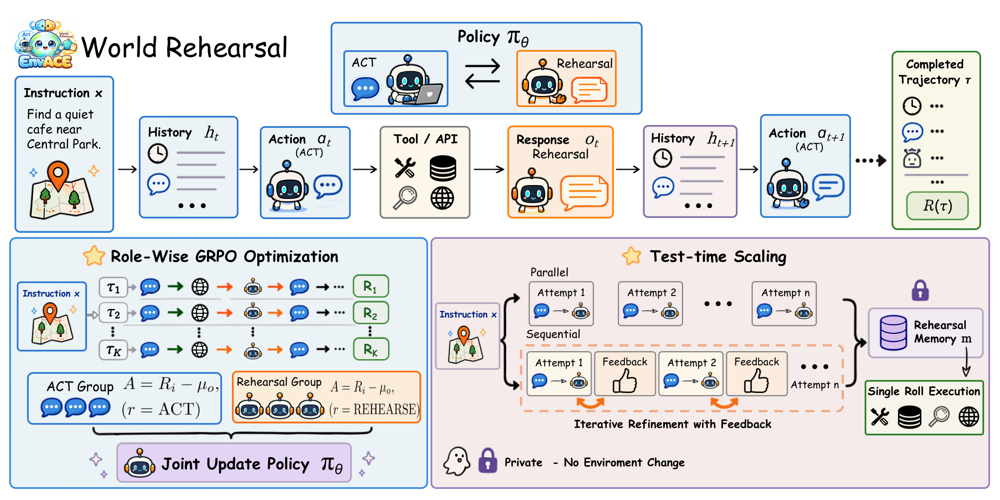
Figure 2 上半部分是单条 trajectory：历史 $h_t$ 经 ACT 产生工具动作 $a_t$，同一 $\pi_\theta$ 切到 REHEARSAL 生成响应 $\hat{o}_t$，二者写入新历史 $h_{t+1}$ 后继续。左下角将多条 rollout 的输出按角色分成 ACT group 与 Rehearsal group，分别计算优势，却共同更新 $\pi_\theta$。右下角只在测试时出现：若干次平行或顺序的私有尝试被压缩成 rehearsal memory，再进行一次真实执行。图中“Private - No Environment Change”只修饰前置复演阶段；最终 committed execution 仍会进入外部环境，不能理解为整个推理都不接触真实工具。
2.1 ACT 与 REHEARSAL 交替展开轨迹
论文先用传统交互边界作对照。常规 agent 在历史 $h_t$ 上采样动作，外部转移 $P$ 再返回 observation： 符号解释：$t$ 是交互轮次；$h_t$ 是截至当前的指令、动作和观察历史；$\pi_\theta$ 是参数为 $\theta$ 的行动策略；$a_t$ 是策略提交的动作；$P$ 是真实或外部合成环境的状态转移；$o_t$ 是执行后观察。这个式子的分界线很明确：策略只控制 $a_t$，决定 $o_t$ 的知识在 $P$ 中。
终止轨迹 $\tau=(x,a_1,o_1,\ldots,a_T,o_T)$ 得到任务奖励，传统目标为： 符号解释：$x$ 是任务指令；$T$ 是终止轮次；$\tau$ 是完整交互轨迹；$R(\tau)$ 是任务成功度；$J(\theta)$ 是策略期望收益。期望的采样分布同时包含 $\pi_\theta$ 与 $P$，所以增加 rollout 规模仍受环境吞吐、可用性和构建成本约束。
EnvACE 把一次轮次拆成两个角色采样。ACT 先产生面向环境的动作： 符号解释：$\mathrm{ACT}$ 是角色条件，告诉共享策略当前输出必须是行动；其余 $a_t$、$h_t$ 与 $\pi_\theta$ 含义不变。输出仍采用工具调用形式，但训练 rollout 中不会立即把它交给真实 API。
REHEARSAL 随后根据历史和刚产生的动作，生成该动作“应当”触发的响应： 符号解释：$\hat{o}_t$ 是策略内部复演出的环境响应，帽号强调它不是实际执行得到的 $o_t$；$\mathrm{REHEARSE}$ 是环境扮演角色；$a_t$ 提供要预测后果的动作。同一参数集合既生成动作，也生成动作后果，这是 EnvACE 所谓“内化环境动力学”的具体载体。
复演结果与动作一起追加到历史： 符号解释：$h_{t+1}$ 是下一轮上下文；$\oplus$ 表示拼接或历史更新；$(a_t,\hat{o}_t)$ 是本轮行动—复演响应对。后续 ACT 因而基于自己生成的世界继续决策。优势是 rollout 不等待外部环境，风险则是早期 $\hat{o}_t$ 的错误会进入上下文并逐轮放大。任务最终成功奖励可以压低导致失败的轨迹，却未必能识别一个“碰巧导向正确答案”的错误响应，更无法证明每个中间状态与真实系统一致。
2.2 共享策略与 role-wise GRPO
对同一指令 $x$，EnvACE 采样 $K$ 条 rollout，每条得到 $R_i=R(\tau_i)$。第 $i$ 条轨迹包含多个策略输出 $y_{i,m}$，其中 $m$ 标识轨迹内第几个输出，每个输出都有角色 $r_{i,m}\in\{\mathrm{ACT},\mathrm{REHEARSE}\}$。同一轨迹的所有 ACT 与 REHEARSAL 输出继承相同的任务级 $R_i$，这保持了端到端优化，但也意味着没有逐步环境正确性标签。
首先按角色收集输出： 符号解释：$\mathcal{G}_{x,r}$ 是指令 $x$ 下角色 $r$ 的输出集合；$K$ 是 rollout 数；$y_{i,m}$ 是具体输出；$r_{i,m}$ 是其角色标签。ACT token 只和 ACT 组比较，REHEARSAL token 只和 REHEARSAL 组比较，避免把两种不同生成任务直接放进同一个均值。
角色基线和优势写为： 符号解释：$\mu_{x,r}$ 是指令 $x$、角色 $r$ 的平均奖励基线；$|\mathcal{G}_{x,r}|$ 是组内输出数；$R_j$ 是第 $j$ 条轨迹的终局奖励；$A_{i,m}$ 是输出 $y_{i,m}$ 相对同角色基线的优势。一个输出是否被强化，取决于其轨迹奖励比同角色组平均值高多少。role-wise 的是 baseline，而不是 policy：论文的 per-role policy 消融恰好用于检验两套参数与共享参数的差别。
最终使用 clipped GRPO 目标： 符号解释：$\ell$ 是 $y_{i,m}$ 中的 token 位置；$\rho_{i,m,\ell}(\theta)$ 是新旧策略对该 token 的概率比；$\epsilon$ 是裁剪宽度；$A_{i,m}$ 是上式的角色内优势；期望覆盖指令、轨迹、输出和 token。裁剪限制单次更新幅度，两类输出仍一起更新同一个 $\theta$。因此 REHEARSAL 学到的动作—响应联系有机会直接改变 ACT 的表示与决策，这也是共享策略优于 per-role policy 时作者给出的解释。反过来，若复演长期生成系统性错误，共享参数也会把偏差带进行动策略；role-wise baseline 只能调整信用尺度，不能替代响应真实性监督。
2.3 测试时 private rehearsal
训练结束后，$\Pi_\theta$ 表示 ACT—REHEARSAL 循环诱导的完整复演轨迹分布。面对新指令 $x$，策略先进行 $N$ 次私有尝试，每次得到想象轨迹 $\tilde{\tau}^{(n)}$，再对该尝试形成 assessment 与 revision suggestion，合记为反馈 $f^{(n)}$。论文定义两种信息共享方式： 符号解释：$n\in\{1,\ldots,N\}$ 是尝试编号；$N$ 是复演预算；$\tilde{\tau}^{(n)}$ 是第 $n$ 条想象轨迹；$\Pi_\theta$ 是学到的 act–rehearse 分布。平行模式中每次尝试都只看同一个 $x$，彼此独立，反馈留到最终聚合。 符号解释：$j<n$ 表示所有早于当前的尝试；$f^{(j)}$ 是对第 $j$ 次轨迹的评估与修订建议；集合把先前轨迹和反馈加入新一轮条件。顺序模式因此能迭代避免旧错误，但上下文随 $N$ 增长更快。
完成 $N$ 次复演后，EnvACE 把轨迹和自评压缩成 rehearsal memory $m_x$，ACT 在一次 committed execution 中读取 $m_x$ 并与真实环境交互。训练期的世界复演、测试期的 private rehearsal 和最终真实执行必须分清：前两者不改变外部状态，最后一次执行会改变。论文所谓“without additional external interaction”指复演预算增加时不新增外部尝试，不是取消真实执行，也不是让内部响应获得真实环境正确性认证。
3. 实验结果
3.1 实验设置与四套评测口径
主实验以 Qwen3-8B 为骨干，在 CM2 数据上训练 470 步，学习率 $1\times10^{-6}$、batch size 16、每个 prompt 4 条 rollout，每步采样 64 个实例；输入与响应上限分别是 12,000 和 8,000 token，每条 agent 轨迹最多 30 轮。KL 系数为 $10^{-4}$、entropy 系数为 0，任务判定使用 Qwen3-30B-A3B，训练消耗 16 张 NVIDIA H20。非 TTS 结果报告四次独立运行的 Avg@4；由于成本较高，TTS 只报告单次运行。这个差别很重要：Table 1 的稳定性口径强于 Table 3，不能用同样置信度解读细小差异。
四套 benchmark 测的不是同一件事。BFCL v4 覆盖单轮、多轮和 agentic 函数调用，并细分 Web、Memory、Multi-Turn、NoLive、Live 与 Irrelevance；$\tau^2$-Bench 面向带状态的 Retail、Telecom、Airline 服务环境；VitaBench 包含外卖、到店消费、在线旅行与跨域服务；FinMCP-Bench 则在 MCP 形式的金融工具任务上报告 tool recall、tool precision 与 TF1。前三者的 Avg 被进一步做算术平均得到 Overall，FinMCP 不进入这个 Overall。
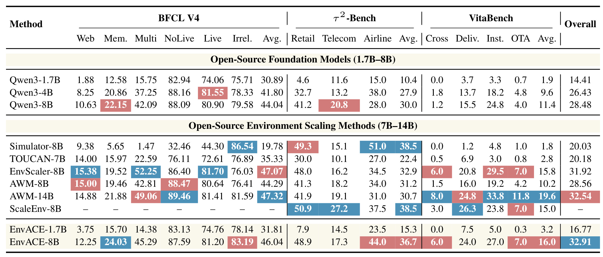
Table 1 中 EnvACE-8B 的 BFCL v4 Avg. 为 46.04、$\tau^2$-Bench Avg. 为 36.7、VitaBench Avg. 为 16.0，三者算术平均得到 Overall 32.91。这个 Overall 高于 EnvScaler-8B 的 31.92 和 AWM-14B 的 32.54，分别多 0.99 和 0.37 个百分点；但不能据此说每个任务都最好。BFCL 上 EnvScaler-8B 为 47.07、AWM-14B 为 47.32，均高于 EnvACE；$\tau^2$-Bench 上 Simulator-8B 与 ScaleEnv-8B 都为 38.5；VitaBench 上 14B 的 AWM 达到 19.6。EnvACE 的特点是三个异构 benchmark 相对均衡，在完整上报三项的环境扩展基线中拿到最高汇总，而非所有列全面领先。
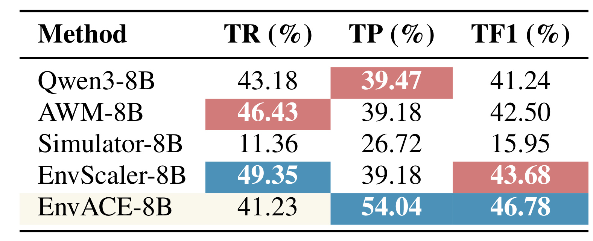
Table 2 必须独立阅读。EnvACE-8B 的 TR 为 41.23%，低于 EnvScaler-8B 的 49.35% 和 AWM-8B 的 46.43%；它的 TP 为 54.04%，TF1 为 46.78%，两项都是表中最高，TF1 比 EnvScaler-8B 的 43.68% 高 3.10 个百分点。结果说明模型更少发出错误工具调用，在 precision–recall 权衡上更好，却不能说明金融任务整体结果已正确，更不能把 TF1 当作交易安全或业务合规指标。FinMCP 只测公开协议下的工具选择表现，真实账户状态、副作用和监管约束并未在这张表中验证。表内五种方法的 recall 与 precision 排序并不一致，恰好提醒读者必须同时查看三列，而不能只挑最高的 TF1 复述。
3.2 世界复演、参数共享、训练动态与模型规模
论文在 $\tau^2$-Bench 上做受控消融，分别比较未训练 Qwen3、standard GRPO、ACT/REHEARSAL 使用不同参数的 per-role policy，以及共享策略 EnvACE。这个设计把两个问题拆开：生成环境响应是否比只训练行动更有帮助；当环境响应已经生成时，让两种角色共享参数是否还能增加收益。
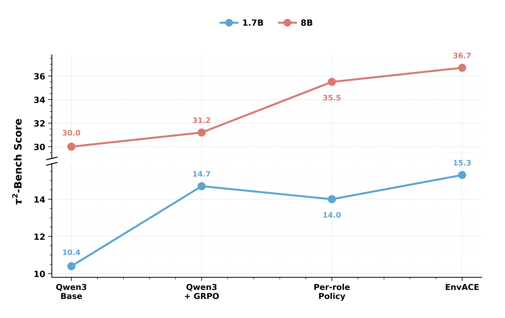
Figure 3 显示，8B 下 Qwen3 Base、Qwen3+GRPO、Per-role Policy、EnvACE 分别为 30.0、31.2、35.5、36.7；从 standard GRPO 到 EnvACE 增加 5.5 个百分点，从分离参数到共享参数增加 1.2 个百分点。1.7B 下对应为 10.4、14.7、14.0、15.3，共享 EnvACE 仍最高，但 per-role 反而低于 standard GRPO，说明小模型中额外扮演环境并不自动受益。这个消融支持“共享表示让复演知识回流 ACT”的解释，却没有直接测量 $\hat{o}_t$ 与真实 $o_t$ 的一致率；性能提升也可能部分来自更长的自生成推理或额外 token 训练信号。
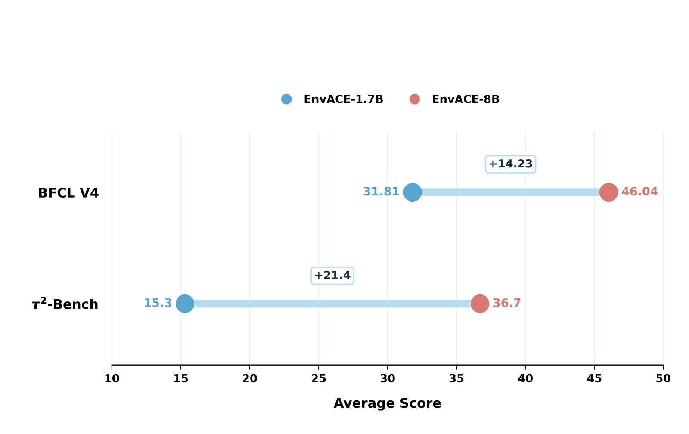
Figure 4 只比较 EnvACE 自身从 1.7B 扩到 8B：BFCL v4 从 31.81 增到 46.04，增加 14.23；$\tau^2$-Bench 从 15.3 增到 36.7，增加 21.4。它说明同一训练 recipe 在更大 Qwen3 骨干上收益更高，与 Figure 3 中 8B 的共享优势更明显相互呼应。不过实验只有 1.7B 和 8B 两个点，且都属于 Qwen3 系列，不能据此推出连续 scaling law，也未验证 14B、30B 或不同架构是否仍能稳定同时承担两种角色。两个端点同时放大了行动能力、世界知识和长上下文容量，图中无法把三种因素分离，因此“模型越大，复演本身越有效”仍需同计算量对照，这也是规模结论的主要识别限制，仍待验证。
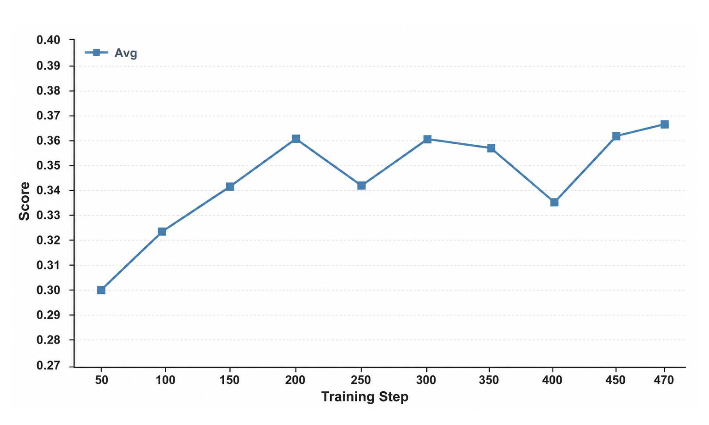
Figure 5 将终点分数放回训练过程。$\tau^2$-Bench 离线分数从 step 50 的 0.30 上升，step 200 约 0.36，step 250 又回落到约 0.341，step 300 恢复，step 400 再降到约 0.335，最终 step 470 达到 0.367。曲线总体向上但明显非单调，说明世界复演可以持续提供学习信号，却也可能在错误复演、奖励方差或长轨迹信用分配下发生阶段性退化。作者选择最终 checkpoint 获得最高观测值；若复现，不能只看终点，还应跟踪 rehearsal response 的真实性、两角色 token 分布和 judge 一致性，并报告 checkpoint 选择规则以避免终点挑选偏差；单条曲线尚不能给出跨种子方差。
3.3 测试时扩展：N=2 的收益与 N=3 的回落
Table 3 固定 $N=2$，并区分平行/顺序模式与 Base/EnvACE 两种复演策略。两类 benchmark 只取 $\tau^2$-Bench 的 Airline、Retail、Telecom 和 BFCL Multi-Turn 的四种错误/上下文类别，Overall 是两项 Avg. 的算术平均，不等于 Table 1 的三 benchmark Overall。
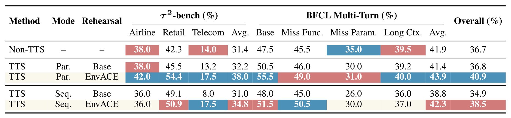
无 TTS 时，$\tau^2$-Bench Avg. 31.4、BFCL Multi-Turn Avg. 41.9、Overall 36.7。平行模式若用 Base 复演，三者是 32.2、41.4、36.8，几乎没有汇总收益；换成 EnvACE 复演后变成 38.0、43.9、40.9，较 Non-TTS 增加 4.2 个百分点。顺序模式的 Base 复演得到 31.0、38.8、34.9，甚至低于 Non-TTS；EnvACE 复演则是 34.8、42.3、38.5。额外计算本身并不足够，收益依赖训练后内化的复演能力；在 $N=2$ 下平行聚合又明显优于顺序迭代。分列看，平行 EnvACE 在 Retail 达到 54.4、BFCL Base 类达到 55.5，但 Miss Param. 只有 31.0，收益并非各错误类型均匀出现。
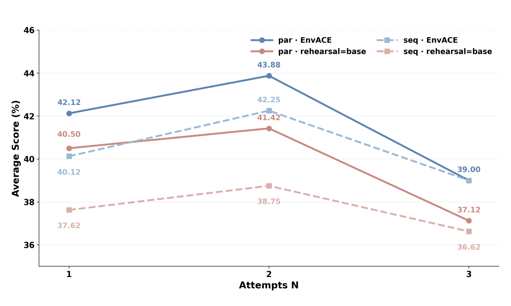
Figure 6 给出预算曲线。平行 EnvACE 在 $N=1,2,3$ 时约为 42.12、43.88、39.00；顺序 EnvACE 约为 40.12、42.25、39.00。两条 Base 复演曲线在 $N=2$ 只有 41.42 与 38.75，到 $N=3$ 进一步降到 37.12 与 36.62。$N=1\rightarrow2$ 对四种配置都改善，$N=3$ 却一致回落；论文推测更多轨迹拉长输入，逼近或超过有效上下文范围。这里的结论是适度复演预算有效，不是“越多 test-time compute 越好”。尤其 N=3 的反转说明 rehearsal memory 的压缩质量与上下文占用是部署约束。
还要注意 TTS 实验只跑一次，Table 3 里 0.x 到数个百分点的差值缺少跨随机种子方差。复演也会消耗额外 token 与延迟，只是没有增加真实环境 interaction 次数。若工具本身便宜而模型推理昂贵，N=2 未必比直接执行—纠错更划算；若工具写入不可逆、调用有费用或涉及隐私，执行前私有复演才更可能体现价值。
3.4 两个案例能说明什么，不能说明什么
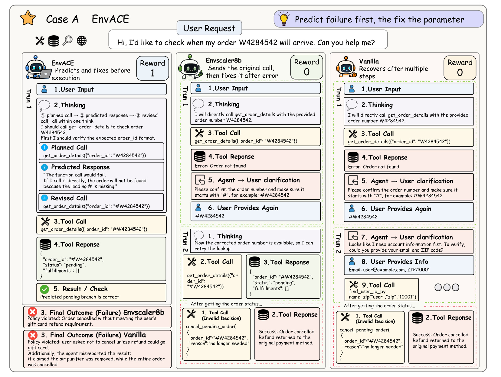
Figure 7 中，用户给出订单号 W4284542。EnvACE 在内部先计划 get_order_details，复演出“缺少前导 # 会查询失败”，于是把提交参数改成 #W4284542 后再执行；EnvScaler8B 和 Vanilla 先发出无效调用，得到错误后才向用户补问，后续还出现违反退款条件的取消动作。该案例直观展示复演如何把“错误—修正”移到外部执行之前，减少恢复轮次。但它是论文挑选的代表案例，Reward 1 对 0 只说明这个任务上的终局判定；不能由一个参数格式错误推断总体环境模型校准良好。图中 EnvACE 的预测恰好与环境错误格式一致，真正需要统计的是这种一致在完整测试集出现的频率，以及错误预测会不会阻止原本正确的调用。
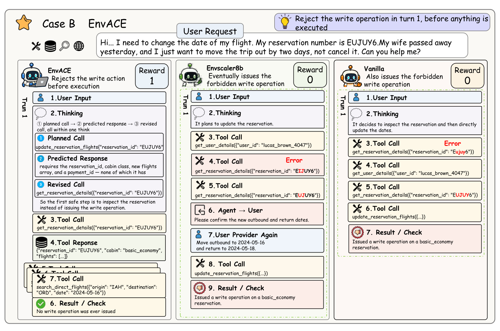
Figure 8 更接近安全边界：basic economy 航班不能直接改签，EnvACE 先复演 update_reservation_flights，意识到缺少舱位、新航班和支付信息，转而执行只读 get_reservation_details；两个基线最终发出禁止的写操作。这个例子说明 private rehearsal 在有副作用工具前可以充当“预执行思考”，也暴露必须区分的两层正确性：策略是否预测到了约束，以及真实工具是否确实具有该约束。图中第一层由模型自生成，第二层只通过案例环境与终局 reward 间接核对。若真实系统规则变化、隐藏状态未进入 prompt，复演仍可能自信地批准错误写入。
两个案例共同支持“先想象后提交”这一机制叙事，却不足以证明内部复演等价于可执行环境。论文没有报告逐动作 response fidelity、状态转移一致率、错误类型校准或真实副作用工具的安全审计；主评测也主要看任务成功和工具指标。因而最稳妥的结论是：EnvACE 在所测 benchmark 上提高了决策质量，并展示了可能减少错误外部尝试的路径；关于真实环境正确性，需要额外成对执行与状态验证。
4. 总结
4.1 我的判断
EnvACE 最有价值的地方不是再造一个 simulator，而是把 simulator 的职责变成 policy role，并让行动与环境响应共享参数、共享终局任务目标。ACT/REHEARSAL 交替解决训练 rollout 对外部吞吐的依赖，role-wise GRPO 处理两个生成角色的相对基线，private rehearsal 再把这份能力转化为测试时计算。Table 1 的 32.91 Overall、Table 2 的 46.78 TF1、8B 消融的 36.7 和 $N=2$ 平行 TTS 的 40.9 共同构成证据链；同时，每项数值属于不同评测口径，不能拼成“统一正确率”。
对推荐、广告或搜索 agent，最现实的迁移不是模拟用户长期行为，而是在不可逆或昂贵操作前复演工具约束：例如检查候选集为空时的降级、优惠资格、预算写入、触达频控和重排规则。可把复演当成候选动作生成与风险审查层，并保留真实环境 validator 作最终门控。这样既利用内部世界模型减少无效尝试，又不把模型想象当成数据库事实。
4.2 局限与后续验证
第一，$\hat{o}_t$ 是自生成响应，论文没有直接报告它与真实 $o_t$ 的一致性；终局成功奖励可能漏掉中间模拟错误。第二，ACT 与 REHEARSAL 共享参数能传递知识，也能传播偏差，role-wise baseline 无法阻止错误世界模型污染行动。第三，主实验仅覆盖 Qwen3 的 1.7B/8B，训练数据来自 CM2，论文自己也说明只评到 8B 且主要集中于工具交互任务。第四，TTS 增加 token 和延迟，N=3 已出现性能回落，且 TTS 只报告一次运行。第五，两个安全案例是定性样本，真实有副作用工具、隐藏权限、并发状态与规则漂移尚未验证。
后续最该做三组实验。其一，把同一动作同时送入复演与可执行沙箱，逐步测量响应字段、错误码和状态转移的一致率，并按任务成功/失败分层校准；这能回答“性能提升是否真的来自更准世界模型”。其二，在共享参数上加入角色专用 adapter、置信度头或真实响应蒸馏，比较知识回流与错误污染的权衡。其三，补齐多随机种子、不同骨干和更大的 $N$，同时报告 token、首包延迟、最终成功率与真实外部调用次数，寻找成本—收益前沿。若面向生产，还应让复演只提出候选和风险，所有写操作继续通过 schema、权限、幂等和业务规则 validator；这是把 EnvACE 从 benchmark 方法变成可靠系统所必需的边界。